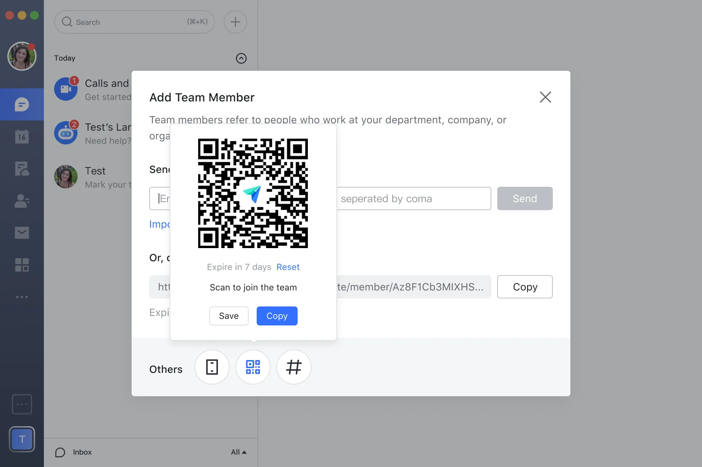
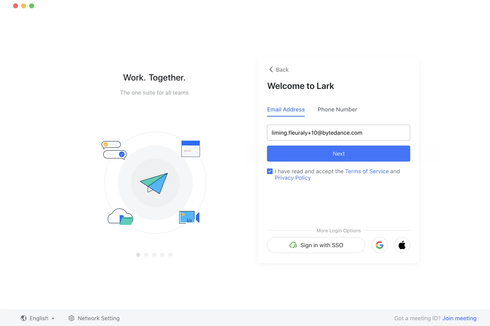
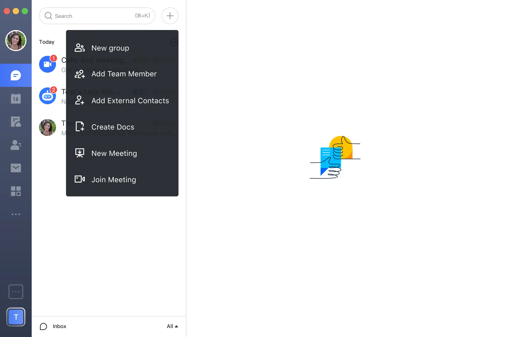
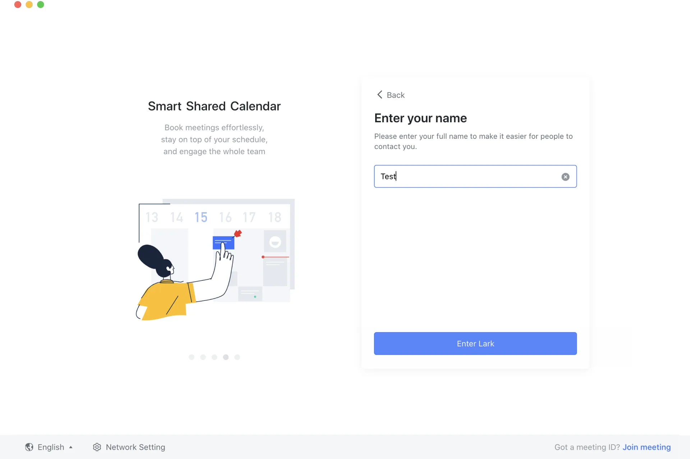
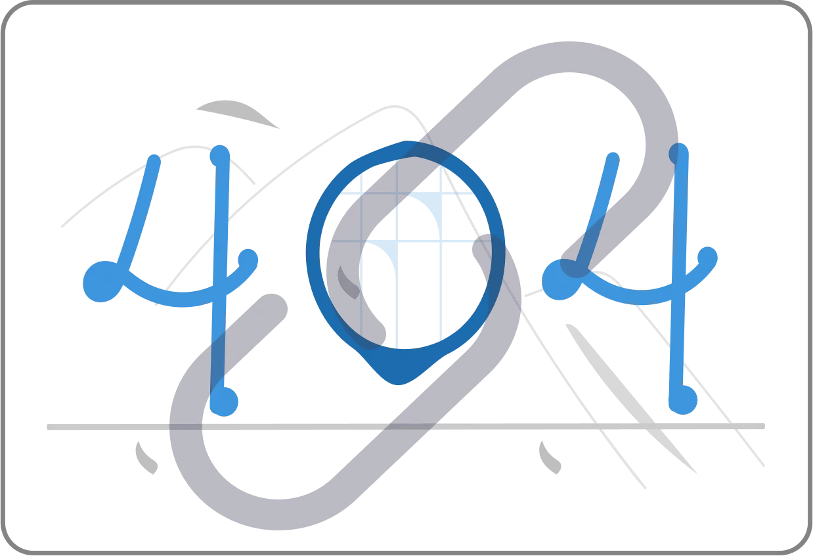

User Onboarding & Team Formation
For data security, I have omitted confidential and private information in this project. All the data in this project belongs to me

Lark is a collaboration office suite designed for business management and communication. Launched in March 2019, this collaborative suite struggled to scale alongside the diversification and fulfill the hyper-growth of user needs. In 2021, Lark's onboarding phase was challenged by fundamental usability and data security risks.
As a UX designer, I worked cross-functionally with the development, ux content, and product team to streamline and optimize the service of Lark Onboarding Process in cross-platforms. I participated the end-to-end product development from research to iterations, from painpoints to user feedbacks, from ideation to final product.
Through qualitative and quantitative research, we defined the problem, reiterated the wireframes, and ideated the final design with cross-team collaboration. Here is our generalized achievement and impact:









As a next-generation collaboration suite, Lark differs from other office tools in methods of use, organization charts, and potential goals. However, The conversion rate of new user to active user is lower than expected as user does not realize the full use of Lark office tool.

At the outset of this project, we did not have a clear mission or pre-existing goal for the design of the team onboarding process. Therefore, I partnered with data analysts, user researchers, and product managers at different phases to embrace the evolving and changing user needs within the onboarding process across user registration, function exploration, member invitation, and team formation. Below is our research and design process:


We conducted customer and market research to drive our planning phase. The key insights that define the pain points in the registration process are

Market research shows that the average registration time of DingDing, one of Lark’s benchmarks, is 37.3s. However, our backend data shows that our users need 121.4s to complete registration.

Through customer interviews, our users are concerned that the platform is collecting irrelevant information, such as gender, age, and personal interests, with one user saying, "I feel exposed, and that makes user comfortable.
Our designers envision more efficiency for the user experience. However, the business team was concerned that the new strategy would deter stakeholders. To gain buy-in, I collaborated with two user researchers and conducted three interviews with SMB and TikTok stakeholders that confirmed the appropriateness of our design decision.
Old Workflow
New Workflow


Upon successful login, users will see eight pages of illustration in Lark's previous feature tour. However, users do not want to spend time reading through pages of instruction, so they choose to skip this section.

To verify my assumption, I asked the data team to read the information related to the feature guidance step and visualized the data in the following pie chart: Less than 10% of people will fully view 8-page feature instruction (orange part in the chart).

(A pie chart showing the use of contextual guidance)
There is a misalignment between users’ preconceived assumptions about Lark and its true potential. As an office platform, we see ourselves as a unique flagship, but users treat it more traditionally. For example, data from the data analysis team shows that over 40% of users know the characteristic of"cross-function" (see the orange section in the first chart).However, the use on cross-function is lower than 20% (see the orange section of the second chart). Under such a situation, how should users fully realize the potential value of lark?


(A pie chart showing function usage of Lark in 2020 Jan)
(A pie chart showing function usage of Lark in 2020 June)
With insights from competitor analysis and expert interviews, I determined that guiding new users through their first platform use would be a better strategy for Lark. Then, with further research, I applied personalized contextual guidance in user experience to make it less noisy but more engaging.

(Solution assessment based on usability tests and customer feedback.)

(How I approach the final design decision based on product assessment.)
To ensure that this design strategy can be successfully applied to our platform, I also conducted an AB Test with assistance from the product management and business development teams to support our assumption. Finally, I made the final design decision based on the expected result from the test result.


The hyper-growth of Lark sounded an alarm to other business platforms in China, such as WeChat Work (Tencent) and DingDing (BABA). Those companies started acting to hinder the path of Lark's expansion. They block the spread of Lark's invitation links on their platforms. The lagging method of member invitation exacerbated the downstream trend of new users joining

Invitation Links sent from other platforms are blocked without notifications, which may lead to credibility loss of the product.

The competition between ByteDance and Tencent results in user loss in Lark.

Potential users do not entrust our platform when privacy errors occur.
I start with a minimum quality bar to enable the invitation of users for all contexts. In this case, we curated several ways to spread member invitation resources:

With a clear information structure based on the penetration rate for each method and information density, we have developed seven different design sketches for team member invitations: